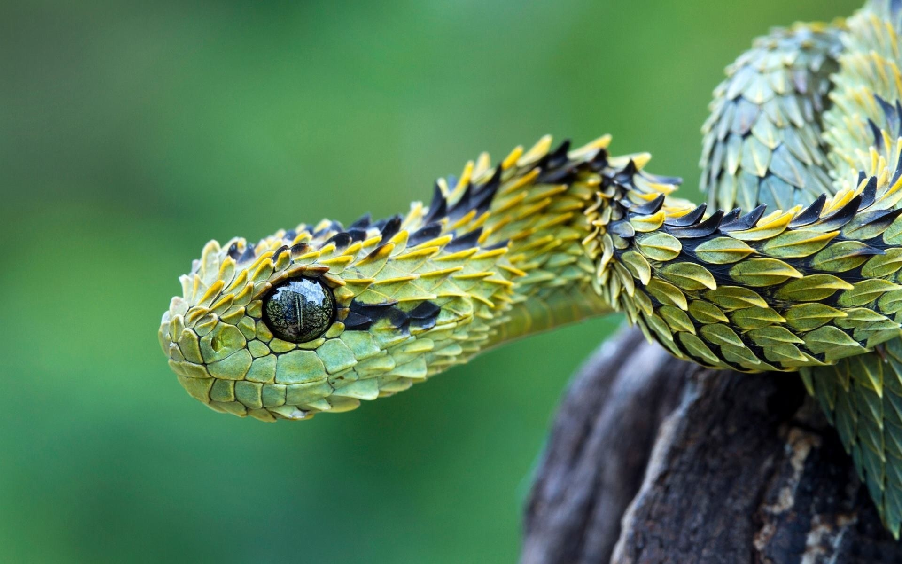

Tadoba Andhari Tiger Reserve is a tiger reserve in Chandrapur district of Maharashtra state in central India. It is notable as Maharashtra's oldest and largest national park. It is one of India's 43 "Project Tiger" - tiger reserves.Aside from the keystone species, the Bengal tiger, Tadoba Tiger Reserve is home to other mammals, including: Indian leopards, sloth bears, gaur, nilgai, dhole, striped hyena, small Indian civet, jungle cats, sambar, spotted deer, barking deer, chital, chausingha and honey badger. Tadoba lake sustains the marsh crocodile, which were once common all over Maharashtra. Reptiles here include the endangered Indian python and the common Indian monitor. Terrapins, Indian star tortoise, Indian cobra and Russel's viper also live in Tadoba. The lake is an ornithologist's paradise with a wide diversity of water birds, and raptors. 195 species of birds have been recorded, including three endangered species. The grey-headed fish eagle, the crested serpent eagle, and the changeable hawk-eagle are some of the raptors. Other interesting species include the orange-headed thrush, Indian pitta, crested treeswift, stone curlew, crested honey buzzard, paradise flycatcher, bronze-winged jacana and lesser goldenbacked woodpecker. Warblers and the black-naped blue flycatcher exist here and the call of the peacock may often be heard. 74 species of butterflies have been recorded including the pansies, monarch, Mormons and swordtails.
|  | |
| Location : | Chandrapur district, Maharashtra, India |
| Coordinates | 20°10′0″N 79°24′0″E |
| Area | 625.4 square kilometres (241.5 sq mi) |
| Established | 1955 |
| Governing body | Maharashtra Forest Department |